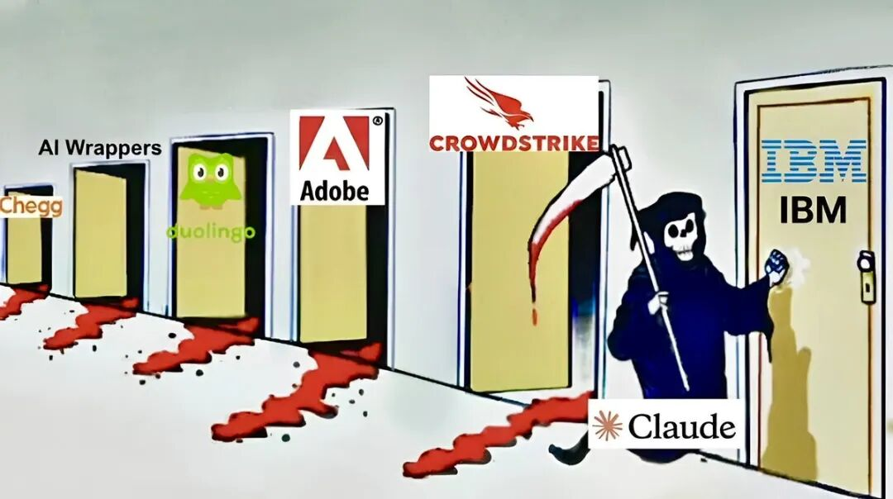
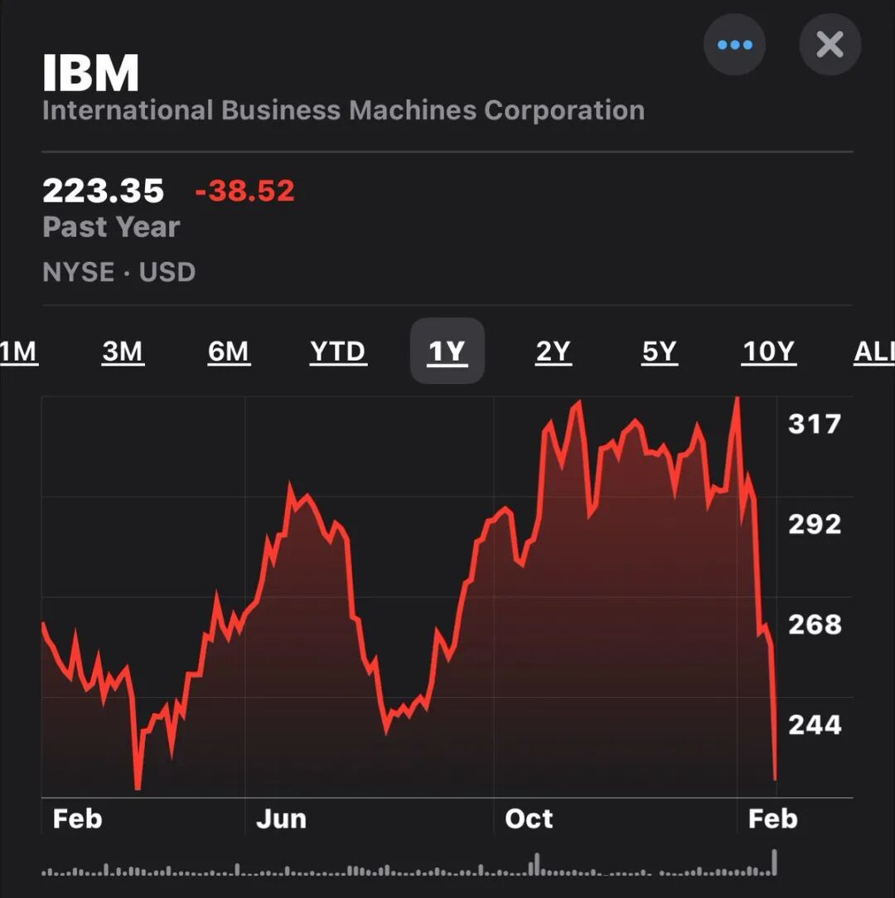

这两个月的硅谷 AI 圈，似乎是 Anthropic 这家公司的独角戏。
如果你之前没怎么关注他们，那你一定听说过前阵子美股科技板块的惨案。
就在不久前，他们随便搞了几个新动作，直接让一众老牌 SaaS 公司的股价集体闪崩，市值瞬间蒸发了几千亿美元。
甚至有媒体直接说：SaaS 行业已死。
原本以为这波收割完他们会消停一会。
结果就在昨晚，Anthropic 又悄悄搞了个大新闻，一口气发布了 10 个王炸级别的企业级插件。
Claude Code 彻底改变了编程，现在Claude Cowork 要来接手剩下的企业了。
那么这 10 个新杀器到底能干啥。
01｜10 个企业级插件齐发，打工人的饭碗保得住吗？
Anthropic 这次直接把矛头对准了各大公司的核心业务部门，推出了一轮全新的企业级 AI 代理。
这次配套发布的 10 个深度定制插件，直接覆盖了人力资源、设计、工程、运营、财务分析、投资银行、股票研究、私募股权和财富管理这些关键岗位，几乎把脑力劳动者的活儿包圆了。
拿金融圈来说，投资银行和财务分析插件能在几分钟内跑完研报、建好财务模型，甚至搞定可比公司分析。
以前这可是华尔街初级分析师熬夜拿命换的活儿。
在后台和产研部门，人力资源插件包揽了从发 Offer 到做绩效的全流程。工程和设计插件则能自动写复盘报告、跑代码测试甚至搭好用户体验框架。
懂行的朋友一看就明白了，这干的都是曾经需要高薪聘请专业人士干的活儿。
现在，你只需要给 Claude 开通权限。

AI 编码能力替代程序员已经是不争的事实，这次就是程序员的命运在更多的岗位上上演。
02｜回看疯狂 2 月，巨头暴跌背后的血色足迹
看完这些插件你可能觉得，不就是多几个新功能吗？
但如果你看看资本市场的反应，就知道事情没这么简单。
这 10 个插件只是 Anthropic 屠龙刀的最新一击，而不是最后一刀。
咱们来仔细盘一盘，今年 2 月资本市场上踩出的这一串血色足迹。
2 月 4 日，Cowork 刚刚发布，直接引发了华尔街口中的 SaaS 启示录。
软件巨头 Atlassian 股价暴跌 35%，财务软件巨头 Intuit 暴跌 34%。仅仅这一周，整个 SaaS 行业就蒸发了 2850 亿美元的市值。
紧接着 2 月 5 日，代理团队功能上线，引发整个软件板块普跌。
追踪软件股的 IGV ETF 基金狂跌 30%，直接创下了 2008 年金融危机以来最惨的季度表现。
到了 2 月 20 日，Anthropic 掏出了代码安全工具 Code Security。这个工具能瞬间捕捉被人类忽视了数十年的代码漏洞。
消息一出，网络安全三巨头 CrowdStrike、Cloudflare 和 Okta 股价单日齐刷刷暴跌 8% 到 9%。

最惨烈的神话破灭发生在 2 月 24 日。
当天 Anthropic 发布了极其高效的 COBOL 现代化工具。
因为这个 AI 能直接取代庞大的外部咨询师团队，老大哥 IBM 遭遇了自 2000 年以来最惨烈的单日暴跌。
一天狂跌 13%，整个 2 月的累计跌幅更是达到了惊人的 27%。

03｜普通打工人，该怎么保住饭碗？
当连 IBM 和各大软件巨头都扛不住 AI 代理的正面硬刚时，咱们普通打工人赖以生存的技能壁垒正在快速消失。
今年所谓的代理年算是彻底拉开大幕了。在这个 AI 开始自主干活的时代，我们或许必须赶紧转换思路。
打不过就加入，我们要从一个亲力亲为的任务执行者，进化为懂得分派任务、把控质量的代理调度者。
我们要学会如何用 Cowork 这样的工具去组合这些插件，让 AI 帮我们打黑工，而不是死死抱着旧有的工作流不放。
否则下一个被列入暗杀名单的，可能就不只是某家软件公司的股票了。
看完 Anthropic 近期的这波魔幻操作，你是觉得隐隐的焦虑，还是觉得终于能从杂活里解脱了？你觉得自己的岗位多久之后会被 AI 代理接管？
欢迎在评论区跟我聊聊你的真实想法。
如果觉得这篇文章对你有帮助，别忘了点个赞，点个♥️，并转发给你的朋友。